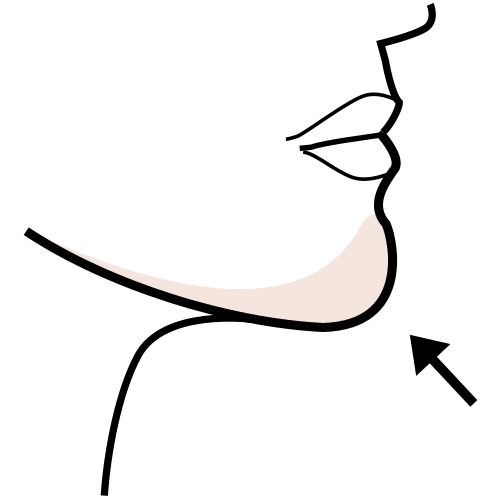
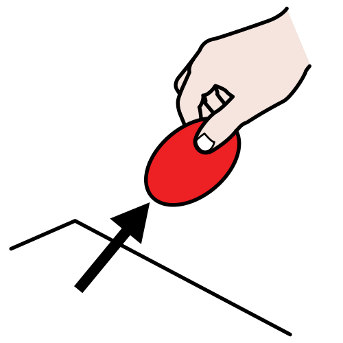
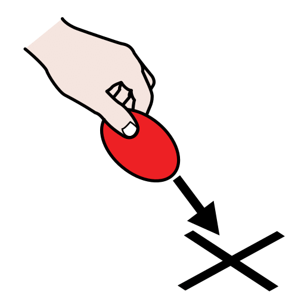
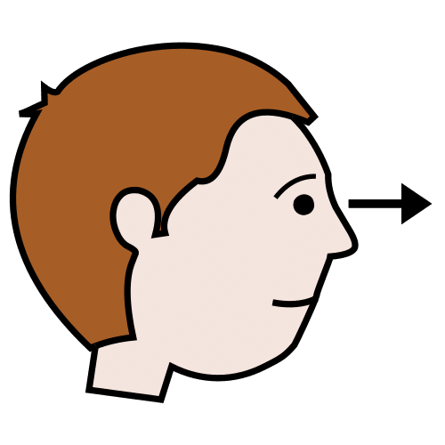
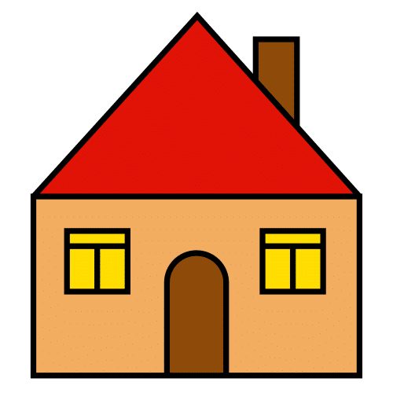
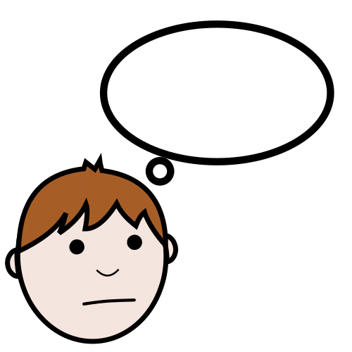

Juego manipulativo · Lectura y escritura
Diptongos
manipulativos
Dos vocales en la misma sílaba. Piezas para verlo y moverlo con las manos, de 1.º a 3.º de Primaria.
Pictogramas: Sergio Palao. ARASAAC (Gobierno de Aragón). CC BY-NC-SA.
Licencia CC BY-NC-SA 4.0
ideducando.es
Cartel para la clase · También en A3
¿Qué es un diptongo?
Son dos vocales juntas en la misma sílaba. Las digo de un solo golpe de voz. Cada sílaba es una casa.
Van juntas: es un diptongo
Se separan: es un hiato Reto


Para contar las sílabas, doy una palmada en cada una. O pongo la mano bajo la barbilla: baja una vez en cada sílaba.
Pictogramas: Sergio Palao. Origen: ARASAAC (arasaac.org). Licencia CC BY-NC-SA. Propiedad: Gobierno de Aragón. Las
casas, las bocas y las formas de las vocales son de IdEducando.
Taller de vocales · Tablero y piezas
¿Caben en una casa?

Coge dos vocales.

Dilas seguidas, de un golpe de voz.

Ponlas juntas en la casa grande.

¿Caben? Diptongo. ¿Se salen? Hiato.
Para el adulto. Las piezas miden lo justo. En la casa grande caben una abierta y una cerrada, o la i y la
u. Dos abiertas no caben. La í y la ú con tilde son las más grandes: llevan la fuerza de la voz y siempre van en su
propia casa. Hay una sola i y una sola u, porque dos iguales también se separan (chi-i-ta).
Pictogramas: Sergio Palao. Origen: ARASAAC (arasaac.org). Licencia CC BY-NC-SA. Propiedad: Gobierno de Aragón.
Corta por aquí: arriba queda el tablero; abajo, las vocales
Piezas de sílabas para recortar, para los niveles 1 y 2
Piezas de sílabas · Plastifica la hoja entera y recorta
Corta por la línea de puntos
Las vocales llevan su forma: círculo las abiertas y óvalo estrecho las cerradas. Las sílabas con diptongo tienen dos
formas juntas. Hay dos juegos: si se mezclan, mira la marca de la esquina. Escribe tus sílabas en las piezas en blanco
antes de plastificar.
1Para el nivel 1 · Las sílabas con diptongo
2Para el nivel 2 · Todas las sílabas de las palabras
3 Nivel 3 · Para escribir
Separo, escribo y rodeo
Pictogramas: Sergio Palao. Origen: ARASAAC (arasaac.org). Licencia CC BY-NC-SA. Propiedad: Gobierno de Aragón.
Plastificada, sirve muchas veces con rotulador de pizarra.
Reto · Diptongo o hiato
¿Juntas o separadas?
Lee la palabra y mira sus dos vocales. ¿Van juntas en una casa o separadas? Rodea la respuesta.
Pictogramas: Sergio Palao. Origen: ARASAAC (arasaac.org). Licencia CC BY-NC-SA. Propiedad: Gobierno de Aragón. Las
soluciones están en la guía, página .
Para la mesa · Plastifícala y déjala a mano
Pasos y soluciones
 Al terminar, compruébalo en las soluciones.
Al terminar, compruébalo en las soluciones.
Soluciones
Pictogramas: Sergio Palao. Origen: ARASAAC (arasaac.org). Licencia CC BY-NC-SA. Propiedad: Gobierno de Aragón.
Para el adulto · Una hoja por grupo
Registro de los diptongos
Cuándo pasar de nivel
- Taller: explica con las piezas por qué dos vocales caben o no en una casa.
- Niveles 1 y 2: resuelve sin ayuda 7 de las 8 tarjetas de una hoja, en dos días distintos.
- Nivel 3: separa bien 6 de las 7 palabras y rodea su diptongo. Reto: acierta 7 de 8.
Es una propuesta de IdEducando: ajústala a cada peque.
| Iniciales |
Taller |
1Nivel |
2Nivel |
3Nivel |
Reto |
Palabras que le cuestan y ayuda que necesita |
Qué observar
- Dice la palabra entera antes de trocearla.
- Separa las sílabas con palmadas o con la barbilla.
- Encuentra las dos vocales que van juntas.
- Explica con sus palabras por qué caben o no.
Solo iniciales, sin diagnósticos. Guarda el registro en el centro y no le hagas fotos con tu móvil.
Guía para el docente
Diptongos manipulativos: cómo enseñarlos paso a paso
Un diptongo son dos vocales seguidas que se pronuncian en la misma sílaba, como en hue-vo o pei-ne. Este material lo
enseña con piezas que se mueven: las vocales abiertas (a, e, o) son círculos anchos y las cerradas (i, u), óvalos
estrechos. En la casa de una sílaba caben una abierta y una cerrada; dos abiertas no caben. Está pensado para toda la
clase de 1.º a 3.º de Primaria, y en especial para el alumnado con dislexia, con trastorno del desarrollo del lenguaje
(TDL) o con discapacidad intelectual.
Lo que dice la Ortografía de la Real Academia Española (RAE)
-
Diptongo: son «secuencias de dos vocales que se pronuncian en la misma sílaba» (RAE y ASALE, 2010,
§ 2.2.2.1). Lo forman una vocal abierta y una cerrada átona, en cualquier orden (ai-re, pien-so, cuan-to), o dos
cerradas distintas (ciu-dad, rui-do). ASALE es la Asociación de Academias de la Lengua Española.
-
Hiato: dos vocales en sílabas distintas. Lo forman dos vocales abiertas (te-a-tro), dos vocales
iguales (le-er) y una cerrada tónica junto a una abierta (rí-o, ra-íz). Esta última siempre lleva tilde (RAE, 2016,
§ 3.2.3).
-
La h no cambia nada: hay diptongo en prohi-bir y hiato en bú-ho. Al hablar deprisa a veces juntamos
dos abiertas («tea-tro»), pero para escribir y separar sílabas siempre son hiato (RAE y ASALE, 2010, § 2.2.2.3).
-
Por qué no hay piano: en España, palabras como piano se pueden decir con hiato, pi-a-no, y está
bien dicho (§ 2.2.2.1). La Ortografía la cuenta como diptongo al escribir. Para no confundir, no está en las tarjetas.
Cómo enseñarlo: primero tú, luego juntos, luego solos
Lo que más respaldo tiene para aprender a leer y a escribir palabras es la enseñanza explícita y sistemática: decir qué
se aprende, enseñarlo con un modelo y practicar con ayudas que se retiran poco a poco (Ehri y otros, 2001; Foorman y
otros, 2016).
-
Yo lo hago. Coge hue-vo y piensa en voz alta: «Hue. Oigo la u y la e de un golpe. La u es cerrada y la
e, abierta. Caben en una casa: es un diptongo».
- Lo hacemos juntos. Otra palabra: cada peque coloca una pieza mientras la dice.
-
Lo haces tú. Por parejas: uno coloca y el otro lo comprueba en la hoja de soluciones (página
).
Cinco sesiones para empezar, de 15 minutos
-
Las vocales. Decid a, e, o, i, u con la mano bajo la barbilla: con las abiertas, la boca se abre más.
Separad las piezas del taller por su forma.
-
El taller «¿Caben en una casa?» (página ). Probad parejas de vocales
hasta descubrir la regla. Después, leed el cartel (página ).
- Nivel 1, hoja A: completar la sílaba que falta.
- Nivel 2, hoja A: formar la palabra entera. Quien lo necesite sigue con el nivel 1.
- Nivel 3: separar, escribir y rodear. Quien quiera, el reto.
Después, ratos de 10 a 15 minutos, tres o cuatro días por semana. En la revisión de Ehri y otros (2001), enseñar en
grupo pequeño o a la clase entera funcionó igual de bien que de uno en uno.
Los tres niveles
-
1
Nivel 1, ¿qué sílaba falta? Las otras sílabas ya están escritas. Dale 2 o 3 piezas para elegir; con
más soltura, todas las de su bolsa.
-
2
Nivel 2, forma la palabra. Solo hay casas vacías, una por sílaba. Busca todas sus piezas y lee la
palabra entera.
-
3
Nivel 3, separa, escribe y rodea. Con la palabra escrita, la separa en las casas que necesite y rodea
el diptongo. El reto compara diptongos con hiatos.
La hoja A es más sencilla: casi siempre el diptongo va delante. La hoja B trae palabras de tres sílabas y la iu de
ciudad. Cuándo pasar de nivel: en el registro (página ).
Errores frecuentes y qué decir
| Si… |
Prueba a decir… |
| Trocea el diptongo: pi-e. |
«Dila de un golpe, como al hablar. Con la mano en la barbilla: ¿cuántas veces baja?». |
| Junta dos abiertas: «leon», en una sílaba. |
«La e y la o son abiertas: no caben en una casa. Le-ón». |
| Ve un diptongo en queso o en guitarra. |
«En que, qui, gue y gui, la u no suena». |
| Duda con rey, hoy o muy. |
«Al final de la palabra, la y suena como una i y forma diptongo». |
| Duda con búho. |
«La h no suena. Mira las dos vocales: la ú lleva tilde, así que se separan. Bú-ho». |
Ideas para cada peque
El Diseño Universal para el Aprendizaje (DUA) propone resaltar los patrones (CAST, 2024, consideración 3.2): aquí, la
forma de cada vocal. También pide apoyos que se retiran poco a poco (5.3) y un reto a la medida de cada peque (8.2).
-
Con dislexia: pocas piezas a la vista y más tiempo. Que diga cada sílaba en voz alta al colocarla.
Nada de copiar de la pizarra.
-
Con TDL: modela despacio, sin trocear el diptongo. Empieza por «juntas» y «separadas», y deja las
palabras diptongo e hiato para más adelante.
-
Con discapacidad intelectual: las mismas ocho palabras durante varias semanas y dos piezas para elegir.
Con este alumnado, lo que más respaldo tiene es enseñar con ayudas que se van retirando (Browder y otros, 2006).
-
Con más reto: palabras con dos diptongos (di-no-sau-rio, a-cua-rio) o con tres vocales en una sílaba,
como miau o buey: son triptongos.
La dislexia y el TDL van juntos a menudo. Ayuda más mirar qué le cuesta a cada peque que su etiqueta (Adlof y Hogan,
2018).
Lo que no sabemos
Este material junta apoyos con respaldo, pero no se ha estudiado como conjunto. Tocar, moverse y dar palmadas ayuda a
practicar, pero el efecto propio de lo multisensorial no está claro: en un metaanálisis, los programas Orton-Gillingham,
que son multisensoriales, no mejoraron la lectura de forma significativa (Stevens y otros, 2021). En la revisión de Ehri
y otros (2001), la enseñanza sistemática no ayudó al grupo de lectores con bajo rendimiento que incluía alumnado con
limitaciones cognitivas. El tamaño de las piezas es una propuesta de IdEducando para ver la regla con las manos.
En el currículo
El Real Decreto 157/2022 y el Decreto 209/2022 de la Región de Murcia piden en el primer ciclo «establecimiento de
generalizaciones sobre aspectos lingüísticos elementales a partir de la observación, comparación y transformación de
palabras y enunciados». El decreto de Murcia nombra «La sílaba. Diptongos e hiatos» en el tercer ciclo. De 1.º a 3.º,
este material es un primer contacto.
Soluciones del reto
Juntas, con diptongo: Separadas, con hiato:
Con otros materiales de IdEducando
Antes, para contar sílabas a palmadas:
El tren de las sílabas. Si también
cuestan las trabadas, como dro en cuadro:
Cartilla de sílabas trabadas.
Para las familias
Diptongos: dos vocales en la misma casa
En clase jugamos con los diptongos. Un diptongo son dos vocales juntas en la misma sílaba, como en
o . Las movemos con
piezas: las vocales abiertas (a, e, o) son círculos y las cerradas (i, u), óvalos estrechos. En cada sílaba, como en una
casa, caben una abierta y una cerrada.
Tres juegos para casa, sin material
-
Palmadas. Decid juntos palabras de casa con una palmada en cada sílaba: a-gua, pei-ne, a-cei-te.
Dos vocales que suenan de un golpe van en la misma palmada.
-
Cazadiptongos. En la compra o en un cuento, buscad palabras con dos vocales juntas. ¡Ojo con queso! En
que y en qui, la u no suena.
-
¿Juntas o separadas? Decid una palabra y pensad si sus dos vocales van en la misma sílaba, como a-gua,
o en dos, como dí-a.

Palabras de casa con diptongo

Si se equivoca
Dile la palabra bien, sin decir «no»: «Sí, a-gua, con dos palmadas». Mejor un rato corto, de 5 minutos, en el que casi
todo salga bien. Si os preocupa cómo habla o cómo lee, comentadlo con su tutor o tutora.
Diptongos manipulativos. IdEducando, noviembre de 2026. Licencia CC BY-NC-SA 4.0. Los símbolos
pictográficos utilizados son propiedad del Gobierno de Aragón y han sido creados por Sergio Palao para ARASAAC
(https://arasaac.org), que los distribuye bajo Licencia Creative Commons BY-NC-SA.
Fuentes y créditos
De dónde sale este material
Diptongos manipulativos. Equipo IdEducando, noviembre de 2026.
ideducando.es/material-gratuito/diptongos-manipulativos. Fuentes consultadas el 17/11/2026.
Qué es un diptongo
-
Real Academia Española y Asociación de Academias de la Lengua Española (2010). Ortografía de la lengua
española. Madrid: Espasa. Capítulo II, apartado 2.2.2, «Secuencias vocálicas: diptongos, triptongos, hiatos».
Comprobado en la prepublicación de la RAE de noviembre de 2010, en rae.es.
-
Real Academia Española (2016). Diccionario del estudiante. Apéndice «Ortografía», apartados 3.2.1.1
«Diptongos ortográficos» y 3.2.3 «Palabras con hiato», págs. 1526 y 1527. rae.es
Currículo
-
Real Decreto 157/2022, de 1 de marzo, por el que se establecen la ordenación y las enseñanzas mínimas de la Educación
Primaria. Boletín Oficial del Estado (BOE) n.º 52, de 2 de marzo de 2022. Anexo II, Lengua Castellana y Literatura,
saberes básicos del primer ciclo, págs. 24465 y 24466.
-
Decreto n.º 209/2022, de 17 de noviembre, por el que se establece la ordenación y el currículo de la Educación Primaria
en la Comunidad Autónoma de la Región de Murcia. Boletín Oficial de la Región de Murcia (BORM) n.º 267, de 18 de
noviembre de 2022. Lengua Castellana y Literatura, saberes básicos: primer ciclo, págs. 40016 y 40017; tercer ciclo,
pág. 40025.
Cómo enseñar a leer y a escribir palabras
-
Ehri, L. C., Nunes, S. R., Stahl, S. A. y Willows, D. M. (2001). Systematic phonics instruction helps students learn
to read: Evidence from the National Reading Panel's meta-analysis. Review of Educational Research, 71(3),
393-447. DOI: 10.3102/00346543071003393
-
Foorman, B. y otros (2016). Foundational skills to support reading for understanding in kindergarten through 3rd
grade (NCEE 2016-4008). Institute of Education Sciences, What Works Clearinghouse. Recomendaciones 2 y 3, con
evidencia fuerte. ies.ed.gov
-
Stevens, E. A., Austin, C., Moore, C., Scammacca, N., Boucher, A. N. y Vaughn, S. (2021). Current state of the
evidence: Examining the effects of Orton-Gillingham reading interventions for students with or at risk for word-level
reading disabilities. Exceptional Children, 87(4), 397-417. DOI: 10.1177/0014402921993406
-
Browder, D. M., Wakeman, S. Y., Spooner, F., Ahlgrim-Delzell, L. y Algozzine, B. (2006). Research on reading
instruction for individuals with significant cognitive disabilities. Exceptional Children, 72(4), 392-408.
DOI: 10.1177/001440290607200401
-
Adlof, S. M. y Hogan, T. P. (2018). Understanding dyslexia in the context of developmental language disorders.
Language, Speech, and Hearing Services in Schools, 49(4), 762-773. DOI: 10.1044/2018_LSHSS-DYSLC-18-0049
-
CAST (2024). Directrices del Diseño Universal para el Aprendizaje, versión 3.0: consideraciones 3.2, 5.3 y
8.2. udlguidelines.cast.org/es
Pictogramas, dibujos y licencia
Los pictogramas son de ARASAAC, el Centro Aragonés para la Comunicación Aumentativa y Alternativa. Su licencia pide
citar este texto: «Los símbolos pictográficos utilizados son propiedad del Gobierno de Aragón y han sido creados por
Sergio Palao para ARASAAC (https://arasaac.org), que los distribuye bajo Licencia Creative Commons BY-NC-SA». Con
pictogramas de ARASAAC, este material no se puede vender: es gratis y lo será siempre. Las casas, las piezas, las bocas,
las formas de las vocales y el diseño son de IdEducando. Licencia CC BY-NC-SA 4.0: puedes copiarlo y adaptarlo citando a
IdEducando, sin fines comerciales y con la misma licencia.